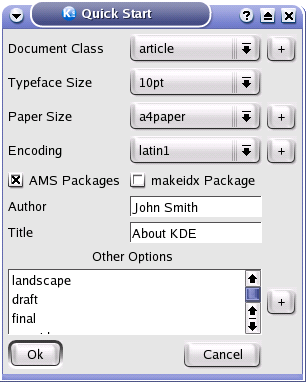
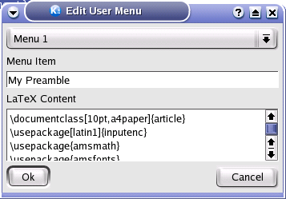
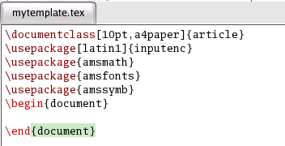
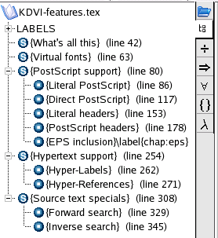
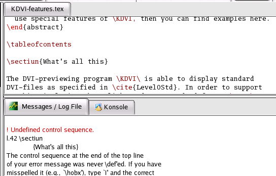
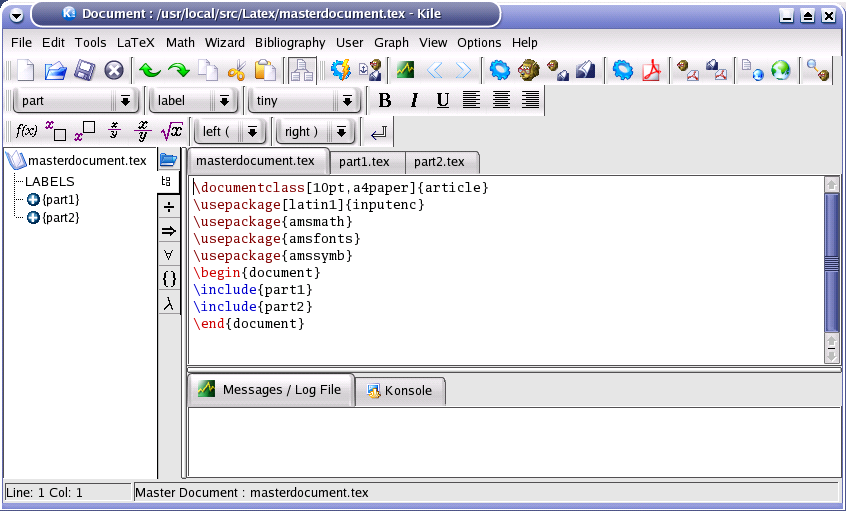
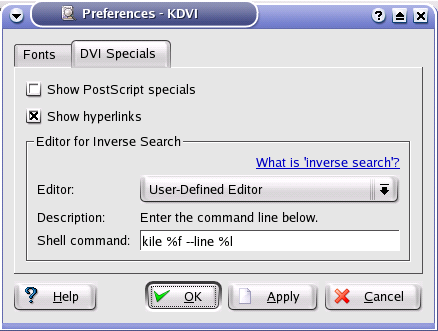
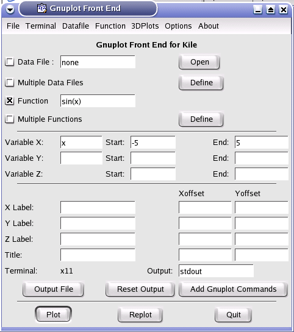

Contents:
In addition to the usual commands of an editor, Kile proposes other commands in
order to facilitate the edition of your source files.
To define the preamble of the source file, you can:
- use the "Quick start" wizard.

- use a template of preamble already recorded in the "User" menu.

- "Copy/Paste" the preamble from another document.

With the toolbar or the "LaTeX/Sectionning" menu, you can insert the title
of a section or of a paragraph thanks to a dialog box.
Then, the "Structure" view is automatically updated. While clicking on one item
in the "Structure" view, the cursor is placed on the corresponding line
in the editor.
Note: for the file names, it is necessary to double-click. For a good work with Kile,
all yours files must be located in the same directory than your main document.

The commands
of the "Tools" menu enable you to directly launch the standard programs
associated with LaTeX. To configure these tools, use the "Configure Kile" command of the "Options" menu.
Note : the commands can't be launched with an untitled document. You must save it before.
The "Next Latex Error"
and "Previous LaTeX Error" commands allow to get to the errors detected
during compilation. While clicking on the number of a line in the "log" file ,
the cursor is placed on the corresponding line in the editor.
With
this command, the compilation and the display of the document are automatically launched unless a LaTeX error is detected
in the "log" file . (Note: only errors will stop the process, warnings
are ignored)After having defined your "master" document (with the corresponding command of the "Options" menu), all the commands of the "Tools" menu will apply only to this
document even when working on the "children" documents . (Note: you can even close the "master" document)

Example of use with Kdvi:
- launch the "Quick Build" command.
- leave open Kdvi and select the "Watch File" mode for this program.
- select the "Watch File" mode (menu "Tools") for Kile.
- for all new launching of the "Quick Build" command, the "dvi" document will be
automatically updated (with the same position) without Kdvi being started
again.
Note : You can also use this mode with kghostview, but it will not work with the embedded viewers.
With this command, Kdvi displays the "dvi" document directly in the place corresponding
to the position of the cursor in Kile. This command is not available if a "master" document is defined in Kile. You must also insert the following
command in the preamble to your document: \usepackage[active]{srcltx }
Note: the "srcltx.sty" and "srctex.sty" files (provided with the documentation
of Kdvi) must be copied in the current directory of your document.
Thanks to this command of Kdvi, with a middle-mouse click in the "dvi" document, Kile will open the "tex" document automatically and will propose to
go to the corresponding line.
(Note: the document "tex" must be compiled as well as the "Kdvi Forward Search" command)
To
select Kile as the default editor in Kdvi, use the command "kile %f --line %l" ("Settings" Menu - "DVI options" - "DVI specials").

The Gnuplot front end provided with Kile is an adaptation
of the Xgfe program created by David Ishee. The use of this tool requires
a good knowledge of Gnuplot.
Example: Layout of the function "sinus"
- Check the "Function" box and enter "sin(x)" in the corresponding field.
- Enter "X" in the "Variable X" field, "- 5" in the "Start" field and "5" in the "End" field .
- Click on the "Plot" button to see the graphic.
- To export the graphic under the format of Xfig: select "fig" in the "Terminal"
menu, click on the "Output File" button, enter the name of the file
(with the extension ".fig") and click on the "Plot" button .You may then open this graphic with Xfig to modify and export it with the "eps" format before incorporating it in your document.

Kile - Copyright © Pascal Brachet 2002/2003 - http://perso.club-internet.fr/pascal.brachet/kile/
Kile contains source code from this free (GPL) program :
Xgfe (X Windows GUI front end to Gnuplot) : Copyright (C) 1998 David Ishee
This program is free software; you can redistribute it and/or modify
it under the terms of the GNU General Public License as published by
the Free Software Foundation; either version 2 of the License, or
(at your option) any later version.
This program is distributed in the hope that it will be useful,
but WITHOUT ANY WARRANTY; without even the implied warranty of
MERCHANTABILITY or FITNESS FOR A PARTICULAR PURPOSE. See the
GNU General Public License for more details.
You should have received a copy of the GNU General Public License
along with this program; if not, write to the Free Software
Foundation, Inc., 675 Mass Ave, Cambridge, MA 02139, USA.